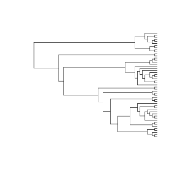

Using the Open Tree synthesis in a comparative analysis
David Winter
2023-06-13
Source:vignettes/meta-analysis.Rmd
meta-analysis.RmdPhylogenetic Comparative Methods
The development of phylogenetic comparative methods has made phylogenies and important source of data in fields as diverse as ecology, genomic and medicine. Comparative methods can be used to investigate patterns in the evolution of traits or the diversification of lineages. In other cases a phylogeny is treated as a “nuisance parameter”, allowing with the autocorrelation created by the shared evolutionary history of the different species included to be controlled for.
In many cases finding a tree that relates the species for which trait data are available is a rate-limiting step in such comparative analyses. Here we show how the synthetic tree provided by Open Tree of Life (and made available in R via rotl) can help to fill this gap.
A phylogenetic meta-analysis
To demonstrate the use of rotl in a comparative analysis, we will partially reproduce the results of Rutkowska et al 2014. Very briefly, this study is a meta-analysis summarising the results of multiple studies testing for systematic differences in the size of eggs which contain male and female offspring. Such a difference might mean that birds invest more heavily in one sex than the other.
Because this study involves data from 51 different species, Rutkowska et al used a phylogenetic comparative approach to account for the shared evolutionary history among some of the studied-species.
Gather the data
If we are going to reproduce this analysis, we will first need to gather the data. Thankfully, the data is available as supplementary material from the publisher’s website. We provide a copy of this data with the package:
## This dataset is available from the publisher's study website:
egg_data <- read.csv(system.file("extdata", "egg.csv", package = "rotl"),
stringsAsFactors = FALSE
)
## }
head(egg_data)## animal Spp Lndim Measure Neggs
## 1 Zonotrichia_leucophrys White-crowned sparrow 0.000000000 volume 294
## 2 Passer_domesticus House sparrow 0.009407469 volume 149
## 3 Serinus_canaria Canary 0.000000000 volume 52
## 4 Turdus_merula European blackbird 0.021189299 volume 82
## 5 Agelaius_phoeniceus Red-winged blackbird 0.218316086 volume 394
## 6 Quiscalus_mexicanus Great-tailed grackle 0.281894985 mass 822
## Nclutches ESr Type StudyID Year D EN Zr
## 1 73 0.14004594 stat Mead1987 1987 3.421918 85.91673 0.14097244
## 2 31 0.11175203 stat Cordero2000 2000 4.045161 36.83413 0.11222075
## 3 21 0.49679140 stat Leitner2006 2006 2.180952 23.84279 0.54503712
## 4 54 0.38598540 stat Martyka2010 2010 1.414815 57.95812 0.40707397
## 5 106 0.07410136 raw Weatherhead1985 1985 3.173585 124.14982 0.07423744
## 6 205 0.05178834 raw Teather1989 1989 3.407805 241.21099 0.05183471
## VZr
## 1 0.012060292
## 2 0.029555954
## 3 0.047978211
## 4 0.018195675
## 5 0.008254242
## 6 0.004197959The most important variable in this dataset is Zr, which is a normalized effect size for difference ,in size between eggs that contain males and females. Values close to zero come from studies that found the sex of an egg’s inhabitant had little effect in its size, while large positive or negative values correspond to studies with substantial sex biases (towards males and females respectively). Since this is a meta-analysis we should produce the classic funnel plot with effects-size on the y-axis and precision (the inverse of the sample standard error) on the x-axis. Here we calculate precision from the sample variance (Vzr):
plot(1 / sqrt(egg_data$VZr), egg_data$Zr,
pch = 16,
ylab = "Effect size (Zr)",
xlab = "Precision (1/SE)",
main = "Effect sizes for sex bias in egg size among 51 brid species"
)plot of chunk eggs_in_a_funnel
In order to use this data later on we need to first convert it to a standard data.frame. We can also convert the animal column (the species names) to lower case, and remove the underscores in their names, which will make it easier to match names later on:
egg_data <- as.data.frame(egg_data)
## Convert taxon names to lower case
egg_data$animal <- tolower(egg_data$animal)
## Let's remove the underscores (_) from the taxon names
egg_data$animal <- gsub("_", " ", egg_data$animal)Find the species in OTT
We can use the OTL synthesis tree to relate these species. To do so we first need to find Open Tree Taxonomy (OTT) IDs for each species. We can do that with the Taxonomic Name Resolution Service function tnrs_match_names:
taxa <- tnrs_match_names(unique(egg_data$animal), context = "Animals")## Warning in tnrs_match_names(unique(egg_data$animal), context = "Animals"):
## partial argument match of 'context' to 'context_name'
head(taxa)## search_string unique_name approximate_match ott_id
## 1 zonotrichia leucophrys Zonotrichia leucophrys FALSE 265553
## 2 passer domesticus Passer domesticus FALSE 745175
## 3 serinus canaria Serinus canaria FALSE 464865
## 4 turdus merula Turdus merula FALSE 568572
## 5 agelaius phoeniceus Agelaius phoeniceus FALSE 226605
## 6 quiscalus mexicanus Quiscalus mexicanus FALSE 743411
## is_synonym flags number_matches
## 1 FALSE 1
## 2 FALSE 1
## 3 FALSE sibling_higher 1
## 4 FALSE 1
## 5 FALSE 1
## 6 FALSE 1All of these species are in OTT, but a few of them go by different names in the Open Tree than we have in our data set. Because the tree rotl fetches will have Open Tree names, we need to create a named vector that maps the names we have for each species to the names Open Tree uses for them:
taxon_map <- structure(taxa$search_string, names = taxa$unique_name)Now we can use this map to retrieve “data set names” from “OTT names”:
taxon_map["Anser caerulescens"]## Anser caerulescens
## "chen caerulescens"Get a tree
Now we can get the tree. There are really too many tips here to show nicely, so we will leave them out of this plot
tr <- tol_induced_subtree(ott_id(taxa)[is_in_tree(ott_id(taxa))])## Warning in collapse_singles(tr, show_progress): Dropping singleton nodes
## with labels: mrcaott246ott5481, mrcaott246ott7145, mrcaott246ott928360,
## mrcaott246ott1858, mrcaott246ott2907, mrcaott246ott3600042, mrcaott246ott7113,
## Passeriformes ott1041547, mrcaott246ott3212, mrcaott246ott428578,
## mrcaott246ott44866, mrcaott246ott5929, mrcaott246ott32658,
## mrcaott246ott310390, mrcaott246ott176461, mrcaott246ott22325,
## mrcaott246ott10351, mrcaott246ott193904, mrcaott246ott5934, mrcaott246ott1566,
## mrcaott1566ott3598440, mrcaott1566ott496009, mrcaott1566ott59716,
## mrcaott1566ott32651, mrcaott1566ott24297, mrcaott1566ott45312,
## mrcaott1566ott22300, mrcaott22300ott35350, mrcaott22300ott547548,
## mrcaott22300ott909199, mrcaott22300ott67150, mrcaott22300ott130294,
## mrcaott22300ott3598245, mrcaott22300ott416087, mrcaott22300ott629342,
## mrcaott22300ott416089, mrcaott22300ott107840, mrcaott364210ott451069,
## mrcaott364210ott3598839, mrcaott3598839ott5341363, mrcaott19467ott431648,
## mrcaott19467ott252687, mrcaott19467ott401023, mrcaott19467ott233446,
## mrcaott19467ott168078, mrcaott19467ott1046624, mrcaott19467ott161293,
## mrcaott19467ott46396, mrcaott46396ott46398, mrcaott46398ott168083,
## mrcaott168083ott431676, mrcaott2175ott35326, mrcaott2175ott968664,
## mrcaott2175ott259082, mrcaott2175ott59905, mrcaott2175ott2224,
## mrcaott2224ott366470, mrcaott3364ott310375, mrcaott3364ott3370,
## mrcaott4083ott35042, mrcaott4083ott370807, mrcaott4083ott469177,
## mrcaott4083ott18592, mrcaott4083ott139823, mrcaott4083ott11712,
## mrcaott4083ott95949, Erythrura ott465905, mrcaott24017ott389884,
## mrcaott24017ott24025, mrcaott24025ott596763, mrcaott24025ott453058,
## mrcaott24025ott141501, mrcaott141501ott966119, mrcaott141501ott865472,
## mrcaott141501ott389883, mrcaott105913ott311555, mrcaott311555ott1082386,
## mrcaott311555ott708327, mrcaott708327ott966122, mrcaott4088ott8371,
## mrcaott4088ott5616, mrcaott5616ott28339, mrcaott5616ott6023,
## mrcaott6023ott243614, mrcaott6023ott101225, mrcaott6023ott125079,
## mrcaott125079ott463026, mrcaott125079ott765405, Zonotrichia (genus in
## domain Eukaryota) ott789032, mrcaott125079ott265547, mrcaott125079ott265554,
## mrcaott5620ott254662, mrcaott5620ott29804, mrcaott29804ott449580,
## mrcaott29804ott449562, mrcaott29804ott86894, mrcaott29804ott93045,
## mrcaott93045ott264496, mrcaott264496ott264500, mrcaott264500ott3597163,
## mrcaott264500ott283668, Quiscalus ott743410, mrcaott283673ott673386,
## mrcaott283673ott741944, mrcaott283673ott735243, mrcaott213448ott213452,
## mrcaott213448ott1009279, mrcaott213448ott213451, mrcaott213454ott430627,
## mrcaott430627ott498751, mrcaott430627ott617797, mrcaott430627ott3597159,
## mrcaott99175ott364331, Xanthocephalus ott364336, mrcaott6366ott28332,
## mrcaott6366ott88283, mrcaott6366ott341465, mrcaott6366ott157599,
## mrcaott6366ott178457, mrcaott6366ott405215, mrcaott6366ott238142,
## mrcaott6366ott6375, mrcaott6375ott119724, mrcaott6375ott238137,
## mrcaott238137ott328909, mrcaott238137ott464865, Haemorhous ott3601758,
## mrcaott9416ott840030, mrcaott9416ott96148, mrcaott9416ott7068473, Passer
## ott515158, mrcaott9416ott407769, mrcaott9416ott25628, mrcaott9416ott407764,
## mrcaott9416ott68955, mrcaott9416ott73636, mrcaott1488ott72472,
## mrcaott1488ott63797, mrcaott1488ott284404, mrcaott1488ott107463,
## mrcaott1488ott17016, mrcaott1488ott44217, mrcaott1488ott16185,
## mrcaott16185ott274931, Hirundinidae ott897681, mrcaott16185ott67916,
## mrcaott67916ott67921, mrcaott67916ott368059, mrcaott67916ott67920,
## Delichon ott922719, mrcaott107476ott177058, mrcaott107476ott271376,
## mrcaott107476ott337752, mrcaott337752ott7661935, mrcaott337752ott337762,
## mrcaott337752ott7068616, mrcaott2375ott73144, mrcaott2375ott124085,
## mrcaott2375ott71358, mrcaott2375ott814750, mrcaott2375ott61147,
## mrcaott84656ott123763, mrcaott123763ott728471, mrcaott123763ott258794,
## mrcaott4820ott409116, mrcaott4820ott17162, mrcaott4820ott20998,
## mrcaott4820ott20989, mrcaott4820ott58860, mrcaott4820ott23690,
## mrcaott4820ott20996, mrcaott4820ott11462, mrcaott4820ott140440,
## mrcaott4820ott197505, mrcaott4820ott75978, mrcaott4820ott11315,
## mrcaott4820ott5933, mrcaott5933ott60465, mrcaott5933ott25637,
## mrcaott25637ott199843, mrcaott25637ott473431, mrcaott25637ott686166,
## mrcaott25637ott111993, mrcaott25637ott183621, mrcaott183621ott501241,
## mrcaott501241ott3598010, mrcaott501241ott597018, mrcaott686165ott686168,
## mrcaott60456ott662804, mrcaott60456ott75990, Pica ott776480, Falconiformes
## ott212187, Falconidae ott212186, mrcaott47588ott225286, mrcaott47588ott748842,
## mrcaott47588ott201377, mrcaott201377ott773020, Cerchneis ott3596159,
## mrcaott179290ott352521, mrcaott179290ott624976, mrcaott179290ott624973,
## mrcaott179290ott624974, mrcaott179290ott432111, mrcaott5272ott92263,
## mrcaott5272ott24121, Scolopacidae ott887699, mrcaott24121ott217797,
## mrcaott24121ott45306, mrcaott24121ott654830, mrcaott24121ott214779,
## mrcaott24121ott651066, mrcaott651066ott1090732, mrcaott7639ott306220,
## mrcaott7639ott57833, mrcaott7639ott383929, mrcaott7639ott279504,
## mrcaott7639ott47401, mrcaott7639ott341047, mrcaott7639ott234666,
## mrcaott7639ott341034, mrcaott7639ott285543, Sterna ott16767,
## mrcaott285543ott341030, mrcaott285543ott738509, mrcaott285543ott966606,
## mrcaott285543ott966604, mrcaott22965ott738512, mrcaott22965ott80679,
## mrcaott22965ott558955, mrcaott22965ott154126, mrcaott22965ott241571,
## mrcaott22965ott282132, mrcaott22965ott414141, mrcaott22965ott704174,
## mrcaott22965ott704175, mrcaott22965ott324050, mrcaott22965ott353849,
## mrcaott22965ott75913, mrcaott75913ott335736, mrcaott306645ott450107,
## mrcaott425206ott887691, mrcaott425206ott515355, mrcaott119599ott993041,
## mrcaott119599ott509055, mrcaott698969ott4947414, mrcaott147723ott219032,
## Stercorariidae ott168297, Stercorarius ott742632, mrcaott742640ott742641,
## mrcaott57823ott57827, mrcaott57823ott242771, mrcaott57823ott112937,
## mrcaott112937ott129402, mrcaott112937ott454019, mrcaott112937ott242776,
## mrcaott242776ott313115, mrcaott242776ott704464, mrcaott242776ott331994,
## mrcaott331994ott413796, mrcaott9830ott86672, mrcaott9830ott90560,
## mrcaott9830ott324158, mrcaott9830ott55044, mrcaott9830ott285638,
## mrcaott9830ott117726, Sulidae ott452462, mrcaott170197ott403772, Sula ott160486,
## mrcaott170197ott5859716, mrcaott170197ott429615, mrcaott429615ott1030312,
## Procellariiformes ott452461, mrcaott18206ott31011, mrcaott31011ott71459,
## Diomedeidae ott85277, mrcaott71459ott320282, Phoebastria ott941509,
## mrcaott320282ott320284, Sphenisciformes ott494366, Spheniscidae ott494367,
## mrcaott60413ott3600120, mrcaott60413ott4130813, mrcaott60413ott4130835,
## mrcaott60413ott4130830, mrcaott60413ott3600127, mrcaott60413ott4130831,
## mrcaott60413ott3600124, mrcaott60413ott3600128, mrcaott60413ott3600129,
## mrcaott60413ott4130819, mrcaott60413ott4130817, mrcaott60413ott60417,
## mrcaott60413ott3600131, mrcaott60413ott917663, Eudyptes ott494364,
## mrcaott82219ott116946, mrcaott116946ott219197, mrcaott134466ott494361,
## Pygoscelis ott494365, mrcaott134466ott783352, mrcaott5021ott198671,
## mrcaott5021ott75792, Cuculiformes ott212171, mrcaott75792ott212172,
## mrcaott75792ott3601282, mrcaott75792ott119216, mrcaott119216ott212175,
## mrcaott119216ott169265, mrcaott169265ott550039, mrcaott169265ott462546,
## mrcaott462546ott3596355, mrcaott462546ott1050027, Cuculus ott1041429,
## mrcaott549514ott7068132, mrcaott549514ott3596308, mrcaott549514ott3596307,
## mrcaott549514ott3596306, mrcaott549514ott792626, mrcaott17146ott57819,
## Columbiformes ott363030, mrcaott17146ott45505, mrcaott45505ott50388,
## mrcaott45505ott506098, mrcaott45505ott51607, mrcaott51607ott277822,
## mrcaott51607ott67614, mrcaott51607ott244134, Columba ott938415,
## mrcaott51607ott277817, mrcaott277817ott320359, mrcaott320359ott493986,
## mrcaott320359ott767317, mrcaott320359ott921832, mrcaott320359ott938416,
## Galliformes ott837585, mrcaott4765ott6520194, mrcaott4765ott109888,
## mrcaott4765ott75785, mrcaott4765ott104461, mrcaott4765ott151684,
## mrcaott4765ott54193, mrcaott4765ott49319, mrcaott4765ott3596087,
## mrcaott4765ott415487, mrcaott4765ott51354, mrcaott4765ott446490, Tetraoninae
## ott999677, mrcaott4765ott55929, mrcaott4765ott539045, mrcaott4765ott234824,
## Centrocercus ott728081, mrcaott53700ott572162, mrcaott53700ott466627,
## mrcaott53700ott309383, mrcaott53700ott102722, mrcaott102722ott137547, Phasianus
## ott102718, mrcaott49310ott102705, mrcaott49310ott153554, mrcaott153554o
plot(tr, show.tip.label = FALSE)
There are a few things to note here. First, the tree has no branch lengths. At present this is true for the whole of the Open Tree synthetic tree. Some comparative methods require either branch lengths or an ultrametric tree. Before you can use one of those methods you will need to get a tree with branch lengths. You could try looking for published trees made available by the Open Tree with studies_find_trees. Alternatively, you could estimate branch lengths from the toplogy of a phylogeny returned by tol_induced_subtree, perhaps by downloading DNA sequences from the NCBI with rentrez or “hanging” the tree on nodes of known-age using penalized likelihood method in ape::chronos. In this case, we will use only the topology of the tree as input to our comparative analysis, so we can skip these steps.
Second, the tip labels contain OTT IDs, which means they will not perfectly match the species names in our dataset or the taxon map that we created earlier:
tr$tip.label[1:4]## [1] "Ficedula_albicollis_ott107840" "Luscinia_svecica_ott274225"
## [3] "Turdus_merula_ott568572" "Sturnus_unicolor_ott366470"Finally, the tree contains node labels for those nodes that match a higher taxonomic group, and empty character vectors ("") for all other nodes. Some comparative methods either do no expect node labels at all, or require all labeled nodes to have a unique name (meaning multiple “empty” labels will cause and error).
We can deal with all these details easily. rotl provides the convenience function strip_ott_ids to remove the extra information from the tip labels. With the IDs removed, we can use our taxon map to replace the tip labels in the tree with the species names from dataset.
otl_tips <- strip_ott_ids(tr$tip.label, remove_underscores = TRUE)
tr$tip.label <- taxon_map[ otl_tips ]Finally, we can remove the node labels by setting the node.label attribute of the tree to NULL.
tr$node.label <- NULL
egg_data <- egg_data[egg_data$animal %in% tr$tip.label, ]Perform the meta-analysis
Now we have data and a tree, and we know the names in the tree match the ones in the data. It’s time to do the comparative analysis. Rutkowska et al. used MCMCglmm, a Bayesian MCMC approach to fitting multi-level models,to perform their meta-analysis, and we will do the same. Of course, to properly analyse these data you would take some care in deciding on the appropriate priors to use and inspect the results carefully. In this case, we are really interested in using this as a demonstration, so we will just run a simple model.
Specifically we sill fit a model where the only variable that might explain the values of Zr is the random factor animal, which corresponds to the phylogenetic relationships among species. We also provide Zvr as the measurement error variance, effectively adding extra weight to the results of more powerful studies. Here’s how we specify and fit that model with MCMCglmm:
set.seed(123)
if (require(MCMCglmm, quietly = TRUE)) {
pr <- list(
R = list(V = 1, nu = 0.002),
G = list(G1 = list(V = 1, nu = 0.002))
)
model <- MCMCglmm(Zr ~ 1,
random = ~animal,
pedigree = tr,
mev = egg_data$VZr,
prior = pr,
data = egg_data,
verbose = FALSE
)
} else {
model <- readRDS(file = system.file("extdata", "mcmcglmm_model.rds", package = "rotl"))
}## Warning in inverseA(pedigree = pedigree, scale = scale, nodes = nodes): no
## branch lengths: compute.brlen from ape has been used## Warning in sing.rm$coef: partial match of 'coef' to 'coefficients'## Warning in x$n: partial match of 'n' to 'nu'
## Warning in x$n: partial match of 'n' to 'nu'
## Warning in x$n: partial match of 'n' to 'nu'
## Warning in x$n: partial match of 'n' to 'nu'
## Warning in x$n: partial match of 'n' to 'nu'
## Warning in x$n: partial match of 'n' to 'nu'Now that we have a result we can find out how much phylogenetic signal exists for sex-biased differences in egg-size. In a multi-level model we can use variance components to look at this, specifically the proportion of the total variance that can be explained by phylogeny is called the phylogenetic reliability, H. Let’s calculate the H for this model:
## animal
## 0.00283581It appears there is almost no phylogenetic signal to the data. The relationships among species explain much less that one percent of the total variance in the data. If you were wondering, Rutkowska et al. report a similar result, even after adding more predictors to their model most of the variance in Zr was left unexplained.
What other comparative methods can I use in R?
Here we have demonstrated just one comparative analysis that you might do in R. There are an ever-growing number of packages that allow an ever-growing number of analysis to performed in R. Some “classics” like ancestral state reconstruction, phylogenetic independent contrasts and lineage through time plots are implemented in ape. Packages like phytools, caper and diversitree provide extensions to these methods. The CRAN Phylogenetics Taskview gives a good idea of the diversity of packages and analyses that can be completed in R (note that this links to a draft of the next version of the Taskview as it is currently unavailable from CRAN).